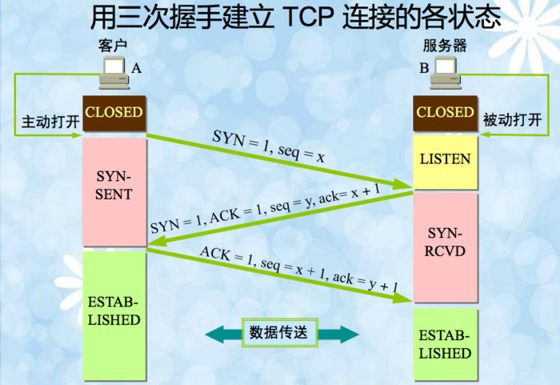
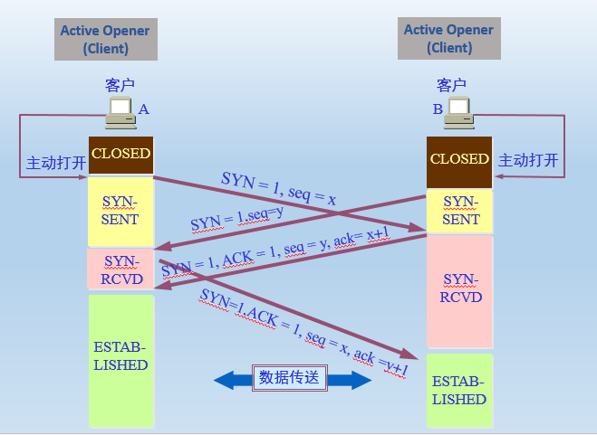
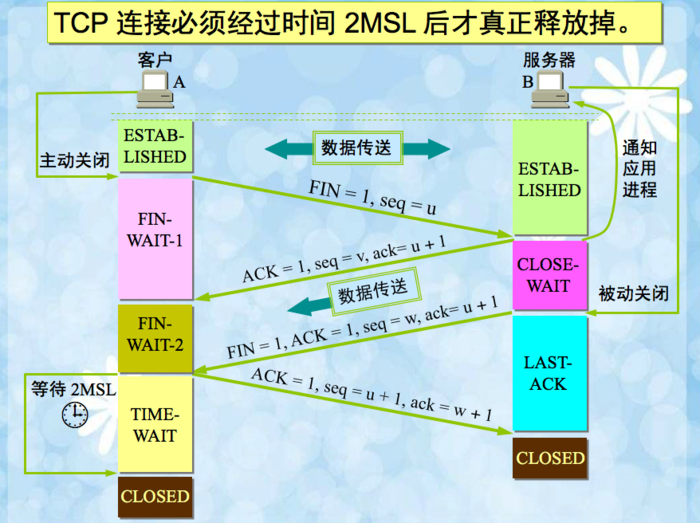
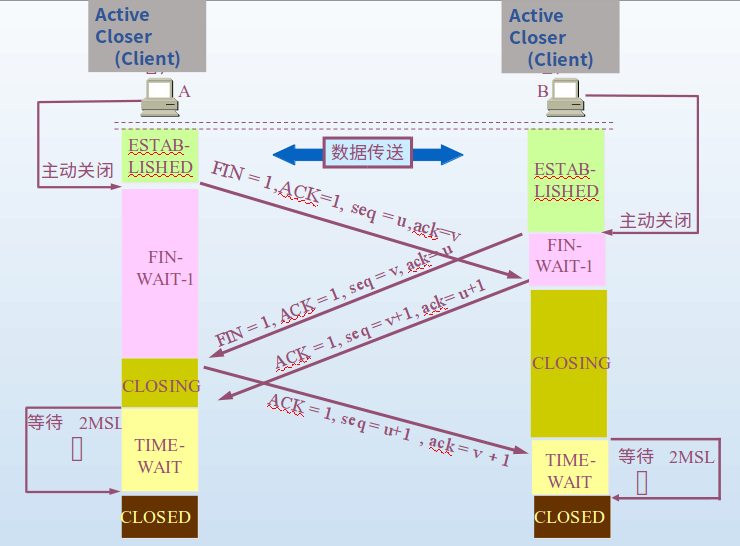
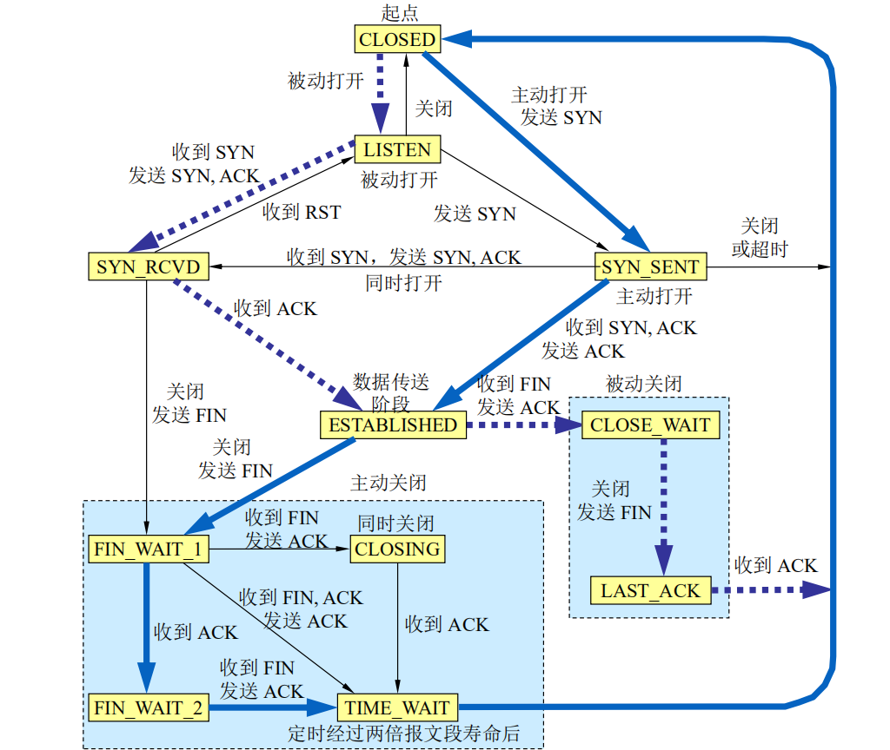

TCP协议
The Transmission Control Protocol (TCP) is one of the main protocols of the Internet protocol suite. It originated in the initial network implementation in which it complemented the Internet Protocol (IP).
Therefore, the entire suite is commonly referred to as TCP/IP. TCP provides reliable, ordered, and error-checked delivery of a stream of octets (bytes) between applications running on hosts communicating via
a network. Major internet applications such as the World Wide Web, email, remote administration, and file transfer rely on TCP, which is part of the Transport Layer of the TCP/IP suite. SSL/TLS often runs on
top of TCP.
正常的三次握手

连接建立发生冲突的情况

正常的四次挥手

连接断开发生冲突的情况

TCP从连接建立到断开整个过程中所有状态组成的有限状态机如下，其中虚线表示被动打开/关闭，实线表示主动打开/关闭

TCP协议中有七个重要的计时器，下面是对这七个计时器的总结
- 连接建立定时器(connection establishment timer):
在发送SYN报文段建立一条新连接时启动。如果在75秒内没有收到响应，连接建立将中止。
- 保持存活定时器(keep alive timer):
在TCP控制块的so_options 字段设置了SOF_KEEPALIVE选项时生效。如果连接的连续空闲时间超过2小时，则保活定时器超时，此时应向对端发送连接探测报文段，强迫对端响应。
如果连续若干次保活测试都未收到响应， TCP就假定对端主机已崩溃，但它无法区分是主机故障还是连接故障。
- FIN_WAIT_2定时器(retransmission timer):
当某个连接从FIN_WAIT_1状态变迁到FIN_WAIT_2状态并且不能再接收任何新数据时，FIN_WAIT_2定时器启动，设为10分钟。定时器超时后，重新设为75秒，第二次超时后连接被关闭。该定时器防止因为收不到被动关闭方的FIN数据而一直处在FIN_WAIT_2阶段。
- 闲置定时器(quiet timer):
也称2MSL定时器或者TIME_WAIT定时器，其中2MSL指两倍的MSL，即最大报文段生存时间。当连接转移到TIME_WAIT状态，即连接主动关闭时，定时器启动。连接进入TIME_WAIT状态时，定时器设定为1分钟，
超时后，TCP控制块被删除，端口号可重新使用。
闲置定时器存在的目的是防止在last ack丢失的情况下过早关闭连接会接收不到对方重发的FIN，以及该连接相关的包没有全部消逝而端口被复用。
- 重传计时器(retransmission timer):
在TCP发送某个数据段时设定。如果该定时器超时而对端的确认还未到达，TCP将重传该数据段。定时器的timeout值可参考Jacobson算法。
- 延迟ACK定时器(delayed ACK timer):
用于捎带确认，在TCP收到必须被确认但无需马上发出确认的数据时设定。如果在200ms内，有数据要在该连接上发送，延迟的ACK响应就可随着数据一起发送回对端，称为捎带确认。如果200ms后，该确认未能被捎带出去，则定时器超时，此时需要发送一个立即确认。
- 持续定时器(persist timer):
在连接对端通告接收窗口为0，阻止TCP继续发送数据时设定。由于连接对端发送的窗口通告不可靠(只有数据才会被确认，ACK不会被确认)，允许TCP继续发送数据的后续窗口更新有可能丢失，造成发送方一直等待窗口更新而无法发送数据。因此，如果TCP有数据要发送，但对端通告接收窗口为0，则持续定时器启动，超时后向对端发送 1字节的询问数据，判定对端接收窗口是否已打开。
Back